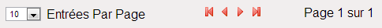

Résidents
La page "Résidents" est la page que l'utilisateur se sert pour accéder à la liste des résidents.
Liste des résidents
La liste des résidents contient les informations suivantes:
- Nom: nom du résident
- Prénom: prénom du résident
- Numéro de tel.: numéro de téléphone du résident
- Numéro de tel. secondaire: numéro de téléphone secondaire du résident
- Couleur: couleur du résident
- Véhicule: véhicule du résident

La ligne de navigation (ci-dessus) permet de choisir le nombre d'entrées (lignes) à afficher, permet de
savoir combien de pages d'entrées y a t-il et permet de naviguer dans les pages (flèches rouges).
Actions sur les résidents
Les actions possibles sur un résident sont (selon les droits utilisateurs):
- Ajouter un résident
- Modifier un résident
- Effacer un résident
Ajouter

Lors d'un clic sur le bouton ajouter (ci-dessus), un formulaire d'ajout de résidents s'ouvre.
Ce formulaire contient 13 champs à remplir dont 7 obligatoires et 2 boutons.
- Champ Nom (obligatoire): saisie du nom du résident
- Champ Prénom (obligatoire): saisie du prénom du résident
- Champ Numéro de tel (obligatoire): saisie du numéro de téléphone du résident
- Champ Numéro de tel. secondaire: saisie du numéro de téléphone secondaire du résident
- Champ Titre (obligatoire): choix du titre du résident
- Champ Date de naissance (obligatoire): saisie de la date de naissance du résident
- Champ Date d'arrivée (obligatoire): saisie de la date d'arrivée du résident
- Champ Couleur (obligatoire): choix de la couleur d'intervention du résident
- Champ Véhicule: saisie de la marque et du modèle du véhicule du résident
- Champ Plaque d'immatriculation: saisie de la plaque d'immatriculation du véhicule du résident
- Champ Commentaires: saisie de commentaires sur le résident
- Champ Commentaires d'intervention: saisie de commentaires sur le niveau d'intervention du résident
- Champ Commentaires de plainte: saisie de commentaires de plainte sur le résident
- Bouton Ajouter: ajoute un nouveau résident avec les données saisies dans le formulaire
et redirige vers la liste des résidents
- Bouton Annuler: annule l'ajout en cours et redirige vers la liste des résidents
Modifier
Lors d'un clic sur le bouton modifier (ci-dessus), un formulaire de modification de résidents s'ouvre avec
les champs pré-remplis avec les données du résidents à modifier.
Ce formulaire contient 13 champs à remplir dont 7 obligatoires et 2 boutons.
- Champ Nom (obligatoire): nom du résident à modifier
- Champ Prénom (obligatoire): prénom du résident à modifier
- Champ Numéro de tel (obligatoire): numéro de téléphone du résident à modifier
- Champ Numéro de tel. secondaire: numéro de téléphone secondaire du résident à modifier
- Champ Titre (obligatoire): titre du résident à modifier
- Champ Date de naissance (obligatoire): date de naissance du résident à modifier
- Champ Date d'arrivée (obligatoire): date d'arrivée du résident à modifier
- Champ Couleur (obligatoire): couleur d'intervention du résident à modifier
- Champ Véhicule: marque et modèle du véhicule du résident à modifier
- Champ Plaque d'immatriculation: plaque d'immatriculation du véhicule du résident à modifier
- Champ Commentaires: commentaires sur le résident à modifier
- Champ Commentaires d'intervention: commentaires sur le niveau d'intervention du résident à modifier
- Champ Commentaires de plainte: commentaires de plainte sur le résident à modifier
- Bouton Mettre à jour: met à jour le résident à modifier avec les données saisies dans le formulaire
et redirige vers la liste des résidents
- Bouton Annuler: annule la modification en cours et redirige vers la liste des résidents
Effacer
Lors d'un clic sur le bouton effacer (ci-dessus), une boite de dialogue s'ouvre avec
une demande de confirmation pour la suppression du résident.
Si la suppression est confirmée, on revient sur la liste des résidents et la ligne du résident
à effacer disparaît.
Sinon, on revient sur la liste des résidents sans modifications.